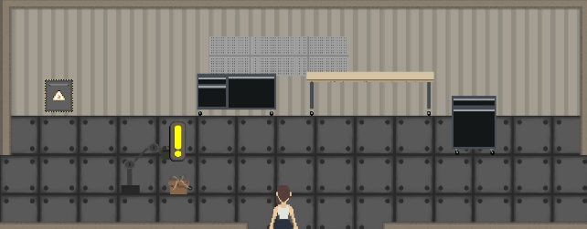
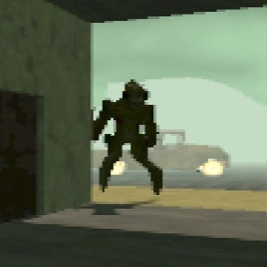
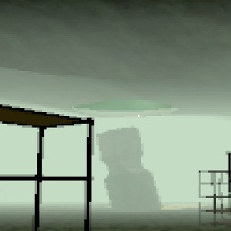
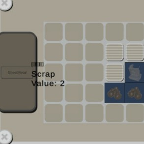

In this project I was the 3D programming lead and handled the player movement, enemy AI, animation control, and interactable elements like item pick ups/pop ups and an inventory tetris system.
Project Greenhouse was a game created over my last year in Game Design at Illinios State University through my capstone course alongside seven of my peers. The game was a hybrid 2D/3D game about a post apocalyptic world where you're the only engineer who survives cryosleep in a greenhouse bunker.
In the 2D greenhouse you grow plants, upgrade their growth abilities, and trade with outsiders who contact you. While you wait for plants to grow, you can upgrade and send out a robot into the radioactive wastes.

The 3D is comprised of the ever changing underground sewers and the city above it. There you collect scrap items for reuse, discover what disaster happened through notes around the wasteland, and avoid the mutated creatures and killer robots in the city. Item storage is managed through an inventory tetris system with different item values to encourage players to be smart about what scrap they pick up.



{kind=link}
{kind=link}
{kind=link}